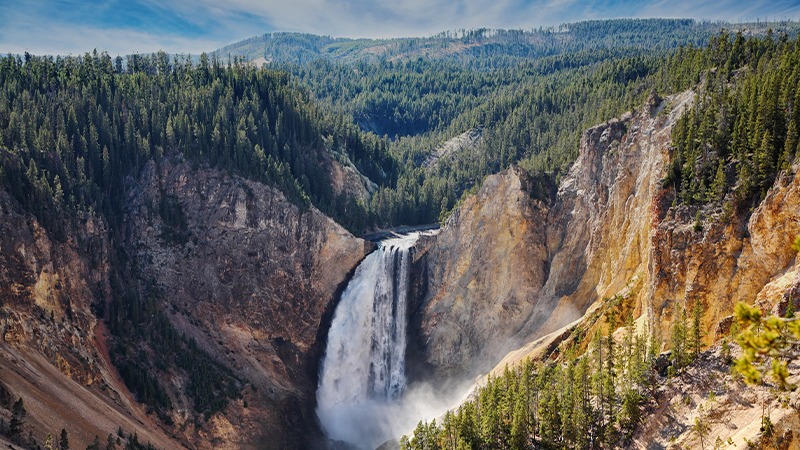
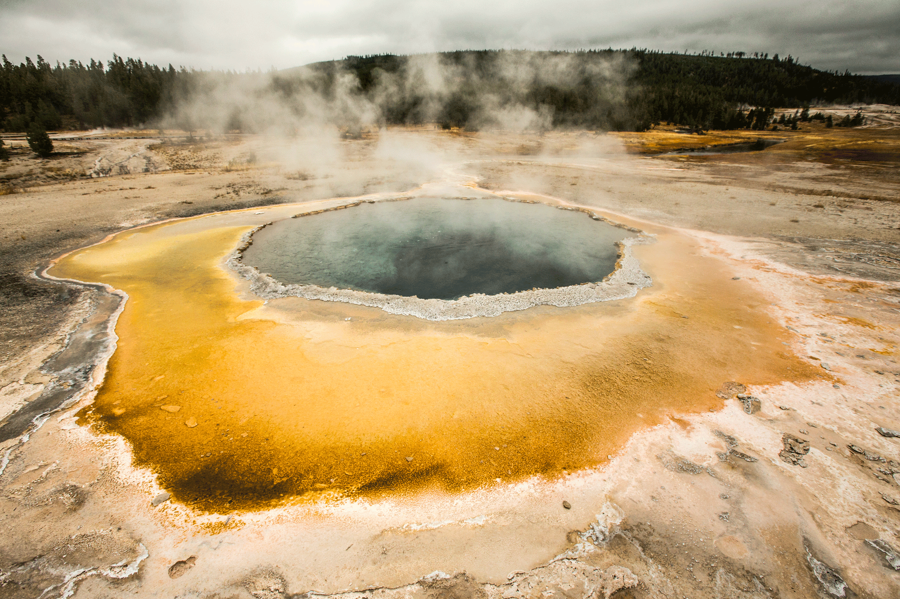

Yellowstone National Park is located mainly in Wyoming, with small sections overlapping Montana and Idaho. Yellowstone was the first national park to be created when it was established by Congress and approved by Ulysses S. Grant. The park is home to the famous Old Faithful geyser. Old Faithful is a geothermal geyser that has erupted between 44 minutes to 2 hours since the year 2000.
 